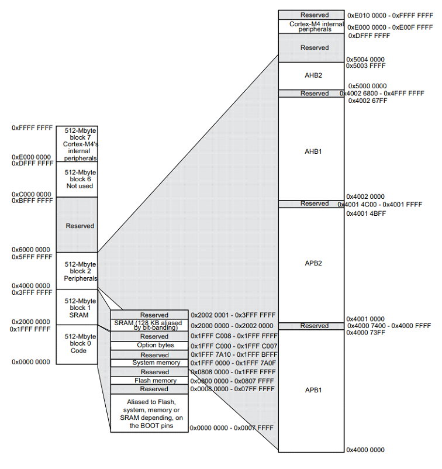
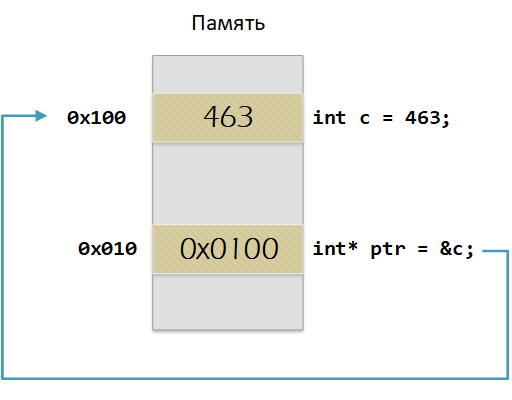
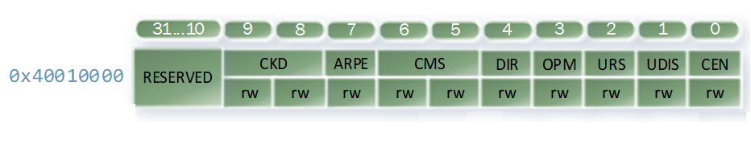
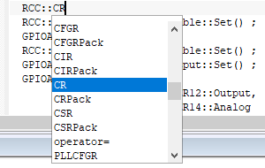
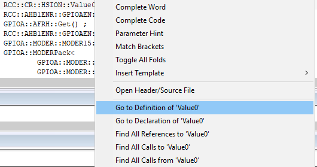
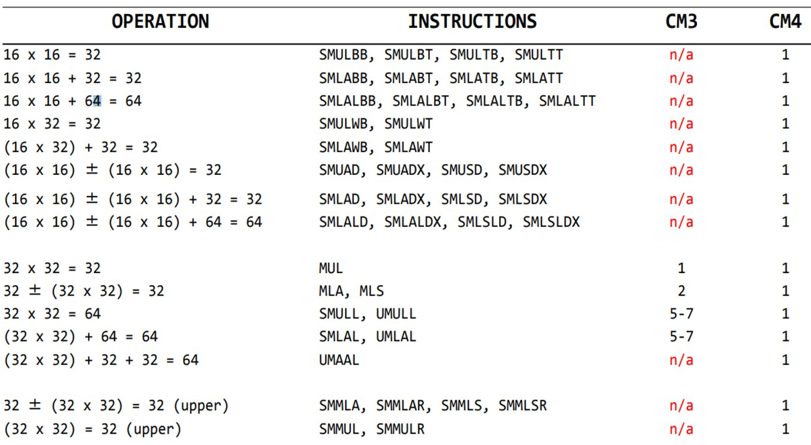
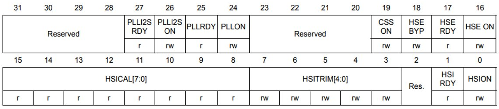

Одно из главных правил портируемости состоит в том, что для разных ядер микроконтроллеров один и тот же тип переменной имел одинаковый размер. Для этого давайте разберемся, что такое тип и почему он может иметь разную длину? Для нашего микроконтроллера компилятор поддерживает следующие типы, см [Встроенные типа С++].
Лекция 2
Портируемость проекта
Для того, чтобы ваш проект мог хорошо портироваться на другие типы микроконтроллеров мы должны принять некоторые меры.
-
Применять одни и те же типы данных, имеющие один и тот же размер
-
Разделять часть, которая отвечает за аппаратуру и аппаратные модули, зависящую от микроконтроллера и бизнес логику, которая не зависит от аппаратуры
-
Использовать разделение реализации и интерфейсов
Сейчас нам важны типы данных.
Типы данных

Figure 1. Типы данных в С++
Встроенные типы
| Тип | Длина | Комментарий |
|---|---|---|
bool |
1 |
Представляет значения, которые могут быть или true, или false. |
char |
1 |
Используется для символов ASCII в старых строках в стиле C или в объектах std::string, которые никогда не будут преобразовываться в Юникод. |
unsigned char |
1 |
Аналог байта. В С++17 стандарте появился тип std::byte |
int |
4 |
Целочисленное значение. Выбор по умолчанию для целых чисел |
unsigned int |
4 |
Беззнаковое целое число |
float |
4 |
Число с плавающей точкой, поддерживается аппаратно некоторыми микроконтроллерами |
double |
4 |
Число с плавающей запятой двойной точности. Выбор по умолчанию для значений с плавающей точкой |
Модификаторы типов данных
| Тип | Длина | Комментарий |
|---|---|---|
short int |
2 |
Целочисленное знаковое значение укороченной длины |
unsigned short int |
2 |
Целочисленное беззнаковое значение укороченной длины |
long int |
8 |
Выбор по умолчанию для целочисленных значений. На платформах на которых int равен по длине unsigned short int может быть длиннее int |
unsigned long int |
8 |
Целое число двойной длины. На платформах на которых int равен по длине unsigned short int может быть длиннее int |
long double |
8 |
Число с плавающей точкой двойной точности с двойной точностью |
Размеры типов данных
Размеры типов не четко определены и могут отличаться для различных микроконтроллеров. Для размеров типов существует правило:
1 <= sizeof(char) <= sizeof() <= sizeof(short) <= sizeof(int) <= sizeof(long)
1 <= sizeof(bool) <= sizeof(long)
sizeof(char) <= sizeof(long)
sizeof(float) <= sizeof(double) <= sizeof(long double)
sizeof(T) == sizeof(signed T) == sizeof(unsigned T)Поэтому вместо прямых типов типа int, используйте псевдонимы, например:
| std::uint32_t |
целое беззнаковое длиной 32 бита |
| std::int64_t |
целое знаковое длинной 64 бита |
| std::uint8_t |
целое знаковое длинной 8 бит |
Пользовательские типы
Вы можете определить свой тип сами, либо сделать псевдоним типа. Любой класс или структура, определенная вами, будет являться вашим типом. Например:
template<typename T>
struct Complex
{
Complex(T r, T im): real{r}, imaginary{im} {} ;
operator T { return sqrt(real*real + imaginary* imaginary) ;}
Complex operator +(Complex value)
{
return Complex(real+ value.real, imaginary + value.imaginary) ;
}
private:
T real; //вещественная часть
T imaginary //мнимая часть
} ;
int main()
{
Complex<float> value1(3.0f, 4.0f) ;
Complex<float> value1(1.0f, 2.0f) ;
value1 += value2 ;
return 0;
}Псевдонимы типов
Для того, чтобы было было понятнее работать с типом можно вводить их псевдонимы (alias). С помощью ключевого слова using ;
auto t = std::make_tuple(10, "Test", 3.14, 2U); (1)
using tMytype = decltype(t) ; (2)
using tShortType = std::tuple<int, string, double, tU32> ; (3)
void(tMyType & value) { (4)
...
}
int main() {
using tU32 = unsigned int ; (5)
tU32 i = 10U ; (6)
myfunction(t) ; (7)
}| 1 | Определяем кортеж из 4 элементов разного типа |
| 2 | Объявляем псевдоним типа, который имеет кортеж (тип выводится компилятором) |
| 3 | Тоже самое что и <2> за исключением того, что указываем тип напрямую |
| 4 | Объявляем функцию, принимающую аргумент типа, который имеет кортеж |
| 5 | Объявляем псевдоним типа unsigned int |
| 6 | Определяем переменную типа unsigned int |
Неявное преобразование типов
Базовые/простые типы неявно можно привести друг к другу. Т.е
int a = 0; (1)
char a = 512; (2)
int a = 3.14; (3)
bool a = -4; (4)
bool a = 0; (5)| 1 | Присваимаем знаковое целое(int) число переменной целого типа |
| 2 | Присваиваем знаковое целое(int) число переменной типа char. Результат в а 0 ; |
| 3 | Присваиваем число с плавающей точкой(double) к переменной типа int. Результат в а 3 |
| 4 | Присваиваем знаковое целое(int) к переменной типа bool. Результат в а true |
| 5 | Присваиваем знаковое целое(int) к переменной типа bool. Результат в а false |
Явное преобразование типов
Так как компилятор может сделать за вас, то, что вы вообще не ожидаете, не нужно использовать неявное преобразование типа.
Вместо этого, лучше указать компилятору явное преобразование из одного типа в другой. В этом случае, вы говорите компилятору, что я понимаю, что я делаю, это именно так и задумано
Для преобразований из одного типа используют 4 вариантов преобразования:
-
static_cast
-
const_cast
-
reinterpret_cast
-
dynamic_cast
static_cast
static_cast позволяет сделать приведение близких типов (целые, пользовательских типов которые могут создаваться из типов который приводится, и указатель на void* к указателю на любой тип).
Проверка производится на уровне компиляции, так что в случае ошибки сообщение будет получено в момент сборки приложения или библиотеки.
int a = static_cast<int>(0); (1)
int a = static_cast<int>(3.14); (2)
bool a = static_cast<bool>(-4); (3)
bool a = static_cast<bool>(0); (4)
float f = 3.14f ; (5)
float f = static_cast<float>(3.14) ; (6)
Complex f = static_cast<3.14> (7)| 1 | Явно говорим, что 0 должен восприниматься как тип (int), хотя он и так является литералом типа int. Но все ли помнят об этом? |
| 2 | Явно говорим, что 3.14 воспринимать как int, т.е взять только целую часть. |
| 3 | Явно говорим, -4 нужно воспринять как bool тип, в данном случае true. |
| 4 | Явно говорим, 0 нужно воспринять как bool тип, в данном случае false. |
| 5 | Явно говорим, что 3.14 это float |
| 6 | Явно говорим, что 3.14 это float |
| 7 | Комплексное число может создаться из double, поэтому тут будет работать static_cast. |
reinterpret_cast
reinterpret_cast преобразует типы, несовместимыми друг с другом, и используется для:
-
В свой собственный тип
-
Указателя в интегральный тип
-
Интегрального типа в указатель
-
Указателя одного типа в указатель другого типа
-
Указателя на функцию одного типа в указатель на функцию другого типа
auto ptr = reinterpret_cast<volatile uint32_t *>(0x40010000) ; (1)
auto value = *ptr ; (2)| 1 | Преобразует адрес 0x40010000 в указатель типа volatile uint32_t |
| 2 | Записывает в переменную value (типа) значение лежащее по указателю ptr, указывающего на адрес 0x40010000 |
Память
Как говорилось в первой лекции, ARM имеет общее адресное пространство для данных и команд.
Ядро ARM имеет 4 Гбайт последовательной памяти с адресов 0x00000000 до 0xFFFFFFFF.
Различные типы памяти могут быть расположены по эти адресам. Обычно микроконтроллер имеет постоянную память, из которой можно только читать (ПЗУ) и оперативную память, из которой можно читать и в которую можно писать (ОЗУ).
Также часть адресов этой памяти отведены под регистры управления и регистры периферии.
Память микроконтроллера CortexM4

Figure 2. Карта памяти микропроцессора
Микроконтроллер на ядре Cortex M4 выполнен по Гарвардской архитектуре, память здесь разделена на три типа:
-
ПЗУ (FLASH память в которой храниться программа)
-
ОЗУ память для хранения временных данных (туда же можно по необходимости переместить программу и выполнить её из ОЗУ), память в которой находятся регистры отвечающие за настройку и работу с периферией и
-
Память для хранения постоянных данных ЕЕPROM.
Адресное пространство памяти программы (ПЗУ) находится по адресам 0x00000000 по 0x1FFFFFFF
Адресное пространство ОЗУ находится по адресам 0x20000000 по 0x3FFFFFFF
Адресное пространство для регистров периферии находится по адресам с 0x40000000 по 0x5FFFFFFF
Памяти EEPROM микропроцессора Stm32F411RE не содержит, см [Карта памяти микропроцессора]. Более подробно вы можете изучить адресное пространство микропроцессора в спецификации на микропроцессор [12].
Память для расположения данных
Данные в памяти могут быть расположены 3 различными способами:
-
Авто(локальные) переменные, которые являются локальными в функции располагаются в регистрах или в стеке.
Такие переменные "существуют" только внутри функции, как только функция закончится и вернется к вызывающему объекту, эти переменные становятся не валидными.
-
Глобальные переменные или статические переменные. В этом случае они инициализируются единожды.
Static означает, что та память, которая была выделена под эту переменную не будет изменяться и закрепляется за этой переменной до конца работы приложения.
-
Динамически размещаемые данные. Данные создаваемые на Куче(Heap)
Если заранее не известно, сколько объектов нужно создать, и сколько памяти они будут отнимать, то придется создавать их динамически, например с помощью оператора new, в таком случае, объекты будут создаваться в куче.
Память под функции(команды)
Для расположения функций используется та же самая память с границами от 0x00000000 - 0xFFFFFFFF.
По умолчанию весь код будет лежать в сегменте .text, который расположен в readonly памяти (обычно в ROM), но можно разместить функции и в ОЗУ.
Указатели
Как мы уже поняли, данные могут находится в ОЗУ или ПЗУ. Каждой переменной содержащей данные соответствует некий адрес памяти. К переменной можно обратиться непосредственно обращаясь к самой переменной, тогда мы можем напрямую писать или читать значение с адреса переменной, либо можно обратиться косвенно, через указатель или ссылку.
Указатель это переменная, которая хранит адрес какой-то другой переменной:
int main() {
int c = 463 ; (1)
int* ptr = &c ; (2)
return 0;
}| 1 | Объявляем переменную c типа int |
| 2 | объявляем указатель ptr на переменную c типа int |

Figure 3. Указатель
Размер указателя для нашего микроконтроллера 4 байта (32 бита).
Взятие адреса и разыменование указателя.
int main() {
int c = 463 ; (1)
int* ptr = &c ; (2)
cout << &c ; (3)
cout << c ; (4)
*ptr = 5; (5)
cout << c << ": " << *ptr; (6)
}| 1 | Объявление переменной |
| 2 | Оператор & - оператор взятия адреса. |
| 3 | Выведется адрес переменной с (0х100) |
| 4 | Выведется значение переменной с (463) |
| 5 | Операция разыменование указателя, записываем в переменную по адресу, который лежит в ptr, число 5 |
| 6 | Вывод значения переменной с и значения лежащего по адресу, на который указывает указатель (5: 5) По сути с и *ptr это одно и то же. |
Операции над указателями
Указатели можно складывать, вычитать, сравнивать. Но указатели должны быть одного типа. Т.е. не нужно например складывать укатель типа char * и int *
int main() {
int arr[] = {1,2,3,4,5} ; (1)
int* ptr = arr ; (2)
ptr ++ ; (3)
int a = *(ptr + 4) ; (4)
if(ptr != nullptr) (5)
cout << a << ": " << *ptr; (6)
}| 1 | Объявление массива arr из 5 элементов. В целом можно считать, что массив arr это указатель на первый элемент массива. |
| 2 | Обявления указателя на массив типа int ; |
| 3 | Увеличиваем указатель на 1. На самом деле мы смещаемся по адресам на размер равный size_of(int), т.е. на 4 байта. Т.е в данном случае указатель ptr стал указывать на элемент массива arr[1]. |
| 4 | Объявляем переменную а типа int и присваиваем ей значение аrr[4]. |
| 5 | Сравнение указателя с nullptr указателем. |
| 6 | Вывод значения а и значения по адресу в указателе ptr. Вывод (5: 2) |
Сложение указателей
int main() {
int arr[] = {1,2,3,4,5} ; (1)
int* ptr = arr ; (2)
ptr ++ ; (3)
int a = *(ptr + 4) ; (4)
}
Figure 4. Сложение указателей
Константный указатель и указатель на константу
int main() {
const auto pi[] = {3.14, 3.14159} ;
const double *ptr = pi ;
*ptr = 3.14159 ; (1)
ptr++ ; (2)
count << *ptr ; (3)
const double * const ptr1 = pi ; (4)
ptr1++ ; (5)
retrun 0 ;
}| 1 | Пытаемся поменять значение по указателю ptr (pi[0]). Ошибка, указатель на константу, нельзя поменять значение константы |
| 2 | Увеличиваем указатель на 1 (теперь указатель указывает на p[1]). |
| 3 | Вывод значения по указателю (3.14159) |
| 4 | Объявляем константный указатель на константу |
| 5 | Нельзя изменить указатель, он константный |
Ссылка
int main(){
int a = 0;
int &ref = a ; (1)
ref = 10; (2)
cout << &ref << ": " << ref ; (3)
return 0 ;
}| 1 | Объявляем ссылку на переменную а |
| 2 | Записываем в переменную а число 10 |
| 3 | Выводим адрес перменной а и значение переменной a |
Ссылка это псевдоним переменной.
-
У ссылки нельзя взять адрес. Если применить оператор взятия адреса к ней, то будет выведен адрес переменной, на которую она ссылается
-
Ссылка ведет себя почти также как константный указатель. Её нельзя изменять, складывать, вычитать
-
Ссылки нельзя сравнивать
-
Ссылка не может быть не проинициализирована.
Регистр
-
Существуют регистры общего назначения и специальные регистры. Регистры общего назначения расположены внутри ядра микроконтроллера(сверхбыстрая память).
-
Регистры общего назначения - это сверхбыстрая память внутри процессора, предназначенная для хранения адресов и промежуточных результатов вычислений (регистр общего назначения/регистр данных) или данных, необходимых для работы самого процессора.
-
Регистры специального назначения расположены в ОЗУ микроконтроллера и используются для управления процессором и периферийными устройствами.
-
Каждый регистр в архитектуре ARM представляет собой ресурс памяти и имеет длину в 32 бита, где каждый бит можно представить в виде выключателя с помощью которого осуществляется управление тем или иным параметром микроконтроллера [10].
Регистры общего назначения
С точки зрения прикладного программиста, процессор располагает 16-ю 32-разрядными регистрами общего назначения (РОН, GPR), из которых три на деле имеют специальные функции:
-
Оперативные регистры
-
Вспомогательные регистры
-
Специальные регистры
Оперативные регистры
Регистры R0-R3, R12 являются оперативными(sratch) регистрами. Любая функция может использовать эти регистры по своему усмотрению и уничтожать содержимое этих регистров.
Если функции нужны значения этих регистров после вызова другой функции, она должна сохранить их на стеке, а после вызова восстановить.
Вспомогательные регистры
Регистры от R4-R11 являются вспомогательными. Любая функция должна сохранить их на входе, а при выходе восстановить их значение.
Специальные регистры
-
Регистр указателя на стек R13/SP, должен всегда указывать на последний элемент стека или ниже него.
-
Регистр R15/PC есть программный счетчик.
-
Регистр R14/LR, содержит адрес возврата функции.
Регистр специального назачения

Figure 5. Схематичное изображение регистра
-
Название регистра
-
Адрес регистра обозначается 32-битным шестнадцатеричным числом.
-
Тип доступа к ячейкам регистра.
-
Длина - количество ячеек в одном регистре. Мы будем работать с 32-битными регистрами.
-
Поле - набор ячеек регистра, отвечающих за работу одной из функции микроконтроллера
-
Значение поля - есть пространство всех возможных величин, которые может принимать поле
Значение поля зависит от длины поля. Т.е. если поле имеет длину 2, то существует 4 возможные значения поля (0,1,2,3). Так же как у регистра, у полей и значений полей есть режим доступа (чтение, записать, чтение и запись)
Пример регистра специального назначения
Как было сказано выше регистры используются для управления микроконтроллером и его периферией. Например, чтобы запустить таймер 1 на счет, необходимо в Таймере1, в регистре CR1(Control Register1) в поле CEN (Counter Enable) установить значение 1 (Enable).

Figure 6. Регистр CR1 Таймера 1
Бит 0 CEN: Включить счетчик
0: Счетчик включен: Disable
1: Счетчик выключен: Enable
Здесь, например, CEN — это поле размером 1 бит имеющее смещение 0 относительно начала регистра. А Enable(1) и Disable(0) это его возможные значения.
Доступ к регистру специального назначения
Так как регистр специального назначения - это просто адресуемая ячейка памяти, то в коде это может мы можем обратиться к данным по этому адресу, разыменовывая указатель, указывающий на этот адрес:
int main()
{
*reinterpret_cast<uint32_t *>(0x40010000) |= 1 << 0 ; (1)
TIM1::CR1::CEN::Enable::Set() ; (2)
}| 1 | Записываем 1 в нулевой бит ячейки памяти (регистра) по адресу 0x40010000 |
| 2 | Тоже самое, но с использование специального класса на С++ |
Работа с регистрами периферии через обертку на С++
Для того, чтобы настроить определенное периферийное устройство процессора, необходимо изменить значение поля соответствующем регистре.
Для более удобной работы с регистрами можно использовать С++ обертку. Эта обертка позволяет обращаться к регистрам в форме очень похоже с тем, как эти регистры описаны в документации.
Так, например, для запуска внешнего источника частоты, необходимо обратиться к регистру “CR” периферии “RCC”, полю HSEON и установить в нем значение Enable. Операция обращения к регистру выглядит следующим образом:
---
int main()
{
RCC::CR::HSEON::Enable::Set() ;
}
---

Figure 7. Подсказка для регистра CR модуля периферии RCC
Некоторые моменты при работе с оберткой С++ для регистров
Код для регистров был сгенерирован автоматически, см [13]. Поэтому по умолчанию все значения полей называются в формате ValueX, где Х-само значение. Поэтому тот момент когда нужно их использовать, нужно заглянуть в документацию и поменять слова Value, на что-то более внятное.
Для того, чтобы найти место где объявляется значение поля, необходимо правой мышкой нажать на значении и найти все его объявления.

Figure 8. Поиск места объявления значения
На самом деле, все значения полей определены в файлах, которые лежат в папке: AbstractHardware\Registers\STM32F411\FieldValues
Можно открыть файл с именем [имя периферии]filedvalues.hpp и найти там структуру названием ИМЯ ПЕРИФЕРИ_ИМЯ РЕГИСТРА_ИМЯ ПОЛЯ_Values.
Например, для значений поля HSEON модуля периферии RCC, регистра CR, необходимо:
-
открыть файл AbstractHardware\Registers\STM32F411\FieldValues\rccfieldvalues.hpp,
-
найти структуру struct RCC_CR_HSEON_Values
-
поменять в этой структуре Value0 на Disable, а Value1 на Enable.
тест
+-------------+
| Asciidoctor |-------+
| diagram | |
+-------------+ | PNG out
^ |
| ditaa in |
| v
+--------+ +--------+----+ /---------------\
| | --+ Asciidoctor +--> | |
| Text | +-------------+ | Beautiful |
|Document| | !magic! | | Output |
| {d}| | | | |
+---+----+ +-------------+ \---------------/
: ^
| Lots of work |
+-----------------------------------+
Соглашение об вызовах
Соглашение об вызовах включает в себя: * Объявление функции * Компоновка С и С++ кода * Последовательность использования оперативных регистров и вспомогательные регистров * Вход в функцию * Выход из функции * Обработка адреса возврата
Объявление функции
Функция должна быть объявлена в таком порядке, чтобы компилятор мог узнать как её вызвать. Объявление функции может выглядеть следующим образом:
int MyFunction(int first, char * second);
Все что знает об этой функции компилятор, это то, что она принимает два параметра: целое и указатель на символ. И функция должна вернуть целое значение. Этого достаточно для компилятора, чтобы понять как вызвать эту функцию.
Компоновка С и С++ кода
В C+ , функция может компоноваться либо как С +, либо как С функция. Пример объявления функции с Си компоновкой:
extern "C" {
int F(int);
}Если вы хотите вызвать функции ассемблера из С++, то лучше объявить эту функцию, как имеющую тип компоновки Си
Вход в функцию
Параметры передающие в функцию могут использовать два метода:
-
Через регистры
-
Через стек
Для большей эффективности параметры передаются через регистры, но их число ограничено, поэтому если регистров не хватает, то используется стек. Для передачи параметров используются оперативные регистры R0:R3
Выход из функции
Функция может вернуть значение. Для возврата значения используются регистры R0:R1. Если значение больше 64 бит, то в регистр R0 записывается адрес где лежат данные.
Вызывающая функция обязана очистить стек, после того, как вызываемая функция вернула значение.
Операторы
-
Арифметические операторы
-
Операторы сравнения
-
Логические операторы
-
Побитовые операторы
-
Составное присваивание
-
Операторы работы с указателями и членами класса
-
Функторы, тернарные операции, sizeof(), запятая, приведение типа, new
Все операторы можно переопределить
Арифметические операторы
Арифметические операторы предоставляют базовые арифметические действия над типами, такие как сложение, вычитание, деление, умножение, остаток от деления, присваивание. Любой оператор может быть определен для множества пользовательского типа. Т.е. вы можете создать свой тип и определить арифметические операторы для вашего типа. Например, можно определить арифметические операторы для множества комплексных чисел, которые могут быть представлены в виде вашего собственного пользовательского типа.
| Операция | Оператор | Комментарий |
|---|---|---|
Присваивание |
= |
a = b |
Сложение |
+ |
a + b |
Вычитание |
- |
a - b |
Унарный плюс |
+ |
+a |
Унарный минус |
- |
-a |
Умножение |
* |
a * b |
Деление |
/ |
a / b |
Остаток от деления |
% |
a % b |
Инкремет (пост и предфиксный) |
++ |
++a и a++ |
Декремент (пост и предфиксный) |
- - |
--a и a-- |
Логические операторы
Логические операторы предоставляют действия над булевым типов. Результат действия этих операторов может быть только true или false
| Операция | Оператор | Комментарий | Пример |
|---|---|---|---|
Логическое отрицание, НЕ |
! |
!a |
!true ⇒ false |
Логическое умножение, И |
&& |
a && |
true && false ⇒ false |
Логическое сложение, ИЛИ |
|| |
a | | b |
true | | false ⇒ true |
Побитовые операторы
Побитовые операторы предоставляют действия с битами.
| Операция | Оператор | Комментарий | Пример |
|---|---|---|---|
Побитовая инверсия |
~ |
~a |
unsigned char a = 0; ~a ⇒ 0xFF |
Побитовое И |
& |
a & b |
unsigned char a = 1, b = 3; a & b ⇒ 1 |
Побитовое ИЛИ |
| |
a | b |
unsigned char a = 1, b = 3; a | b ⇒ 3 |
Побитовое исключающее ИЛИ |
^ |
a ^ b |
unsigned char a = 1, b = 3; a ^ b ⇒ 2 |
Побитовый сдвиг влево |
<< |
a << b |
unsigned char a = 1, b = 3; a << b ⇒ 8 |
Побитовый сдвиг вправо |
>> |
a >> b |
unsigned char a = 8, b = 3; a >> b ⇒ 1 |
Отладочная плата
|
|
|
|
|
|
|
|
|
*Кнопка Сброса |
|
|
|
8 MHz кварцевый резонатор |
|

Figure 9. Отладочная плата
Микроконтроллер ST32F411RE

Figure 10. Функциональные блоки микроконтроллера STM32F411
Ядро CortexM4

Figure 11. Ядро CortexM4
-
Ядро Cortex построено по гарвардской архитектуре с разделением шины данных и кода.
-
Ядро Cortex-М4 поддерживает 8/16/32-разрядные операции умножения, которые выполняются за 1 цикл (деление со знаком (SDIV) или без (UDIV) занимает от 2 до 12 тактов в зависимости от размера операндов
-
Ядро Cortex-М4 поддерживает 8/16/32-разрядные операции умножения со сложением
Характеристики ядра CortexM4
Параметр |
ARM7TDMI |
ARM Cortex-M3 |
ARM Cortex-M4 |
Архитектура |
ARMv4T (Фон Неймана) |
ARMv7 (Гарвардская) |
ARMv7 (Гарвардская) |
Набор инструкций |
Thumb/ARM |
Thumb/Thumb-2 |
Thumb/Thumb-2, DSP, SIMD, FP |
Конвейер |
3 уровня |
3 уровня + предсказание ветвлений |
3 уровня + предсказание ветвлений |
Прерывания |
FIQ/IRQ |
NMI (немаскируемые) + от 1 до 240 физических источников прерываний |
NMI (немаскируемые) + от 1 до 240 физических источников прерываний |
Длительность входа в обработчик прерывания |
24-42 цикла |
12 циклов |
12 циклов |
Длительность переключения между обработчиками прерываний |
24 цикла |
6 циклов |
6 циклов |
Режимы пониженного энергопотребления |
Нет |
Встроены |
Встроены |
Защита памяти |
Нет |
Блок защиты памяти с 8 областями |
Блок защиты памяти с 8 областями |
Производительность по тесту Dhrystone |
0,95 DMIPS/МГц |
1,25 DMIPS/МГц |
1,25 DMIPS/МГц |
Энергопотребление ядра |
0,28 мВт/МГц |
0,19 мВт/МГц |
0,19 мВт/МГц |
Аппаратный модуль работы с плавающей точкой |
нет |
нет |
есть |
Характеристики микроконтроллера
Микроконтроллер имеет следующие характеристики:
|
|
|
|
|
|
|
|
|
|
|
|
|
|
|
|
|
|
|
|
Блок диаграмма микроконтроллера
Блок схема микроконтроллера схематично изображена на рисунке Блок диаграмма микроконтроллера.

Figure 12. Блок диаграмма микроконтроллера
Дополнительные особенности микроконтроллера
Из дополнительных особенностей, которые понадобятся для лабораторных работ следует выделить:
-
Настраиваемые источники тактовой частоты
-
Настраиваемые на различные функции порты
-
Внутренний температурный сенсор
-
Таймеры с настраиваемым модулем ШИМ
-
DMA для работы с модулями (SPI, UART, ADC… )
-
12 разрядный ADC последовательного приближения
-
Часы реального времени
-
Системный таймер и спец. прерывания для облегчения и ускорения работы ОСРВ
Система тактирования
Блок диаграмма системы тактирования

Figure 13. Система тактирования микроконтроллера STM32F411
|
|
Модуль тактирования.
Модуль тактирования (Reset and Clock Control) RCC
-
Для формирования системной тактовой частоты SYSCLK могут использоваться 4 основных источника:
-
HSI (high-speed internal) — внутренний высокочастотный RC-генератор.
-
HSE (high-speed external) — внешний высокочастотный генератор.
-
PLL — система ФАПЧ. Точнее сказать, это вовсе и не генератор, а набор из умножителей и делителей, исходный сигнал он получает от HSI или HSE, а на выходе у него уже другая частота.
-
-
Также имеются 2 вторичных источника тактового сигнала:
-
LSI (low-speed internal) — низкочастотный внутренний RC-генератор на 37 кГц
-
LSE (low-speed external) — низкочастотный внешний источник на 32,768 кГц
-
Фазовая подстройка частоты PLL
-
PLL Внутренний источник PLL тактируется от внешнего или внутреннего высокочастотных генераторов (HSE либо HSI).
-
С помощью регистров PLLM, PLLN,PLLP можно подобрать любую частоту до 100 Мгц включительно по формуле:
-
f = f(PLL clock input) × (PLLN / PLLM) /PLLP
-
Кроме системной тактовой частоты SYSCLK, PLL также выдает частоту 48 МГц для интерфейса USB. При использовании USB входная частота для PLL должна быть в диапазоне от 2 МГц до 24 МГц.
f(USB) = f(PLL clock input) × (PLLN / PLLM) / PLLQ
Дополнительные генераторы тактовой частоты
-
LSE. Низкочастотный внешний генератор частоты.
-
Применение внешнего кварцевого/керамического резонатора на 32,768 кГц на входах OSC32_IN, OSC32_OUT. Высокостабильный источник, формирует тактовые сигналы для часов реального времени RTC, модуля ЖКИ, а также для таймеров TIM9/TIM10/TIM11.
-
Использование внешнего источника тактовой частоты (режим LSE bypass). Формируются тактовые сигналы для часов реального времени и ЖКИ. В этом режиме исходный сигнал поступает с генератора HSE. Входная частота может быть до 1 МГц, затем сигнал проходит через делитель с коэффициентом деления 2, 4, 8 или 16. Входной сигнал может быть прямоугольной, треугольной формы или синусоидой с 50% скважностью.
-
-
LSI. Внутренний RC-генератор частотой около 37 кГц.
-
Как и LSE, позволяет тактировать часы реального времени и модуль ЖКИ. Кроме этого, поддерживает работоспособность независимого сторожевого таймера IWDG в режимах Stop и Standby.
-
Регистр управления частотой.
Clock Control register (CR) Как уже упоминалось, системная тактовая частота для серии "STM32F411" может быть до 100 МГц. Для ее формирования используются 3 основных источника — HSI, HSE, PLL. Включение и выключение основных генераторов производится через регистр RCC_CR — Clock Control register.
Значение по умолчанию: 0x0000 XX81:

| Bit 24 PLLON |
Включить PLL. Этот бит устанавливается и скидывается программно, чтобы включить PLL. Бит не может быть скинут, если PLL уже используется как системная частота.
|
| Bit 16: HSEON |
Включить HSE. Этот бит устанавливается и скидывается программно. Бит не может быть скинут, если HSE уже используется как системная частота.
|
| Bit 0: HSION |
Включить HSI. Этот бит устанавливается и скидывается программно. Очищается аппаратно при входе в режим Stop или Standby. Бит не может быть скинут, если HSI уже используется как системная частота.
|
Регистр управления частотой. Контроль
Сразу после установки частоты, нужно проверить, что частота с нового источника стабилизировалась. Для этого используются те же поля того же регистра CR, оканчивающиеся на RDY (Ready)
| Bit 25 PLLRDY |
Флаг готовности частоты PLL. Этот бит устанавливается аппаратно
|
| Bit 17: HSERDY |
Флаг готовности частоты HSE. Этот бит устанавливается аппаратно.
|
| Bit 1: HSIRDY |
Флаг готовности частоты HSI. Этот бит устанавливается аппаратно
|
Регистр конфигурации частоты. Выбор источника
После включения генераторов частоты, необходимо выбрать один из них в качестве источника для системной частоты SYSCLK. Выбор осуществляется через регистр RCC_CFGR — Clock Configuration Register. Значение по умолчанию: 0x0000 0000
| Bits 3:2 SWS[1:0] |
Статус частоты SYSCLK.
|
| Bits 1:0 SW[1:0] |
Выбор источника частоты SYSCLK.
|
Регистр конфигурации частоты. Делители
Следующие секции регистра HPRE (AHB prescaler), PPRE1 (APB1 prescaler), PPRE2 (APB2 prescaler) — задают коэффициенты деления системной частоты SYSCLK, которая после предделителей поступает на матрицы шин.
| AHB (Advanced High Speed Busses) |
матрица высокоскоростных шин. Она "доставляет" сигналы тактирования к ядру микроконтроллера, памяти (это как FLASH, так EEPROM и RAM) и модулю DMA Direct Memory Access — модуль прямого доступа к памяти), системному таймеру. Также, в семействе STM32F4 на эту шину "посажены" и все порты ввода/вывода GPIO . |
| APB1, APB2 (Advanced Peripheral Bussess) |
матрицы шин периферии. Соотвественно, к остальным периферийным модулям тактовая частота распределяется уже через эти шины. |
| Bits 13:11 PPRE2[2:0] |
Делитель частоты шины APB2. Это устанавливается и очищается программно.
|
| Bits 10:8 PPRE1[2:0] |
Делитель частоты шины APB1 Это устанавливается и очищается программно.
|
| Bits 7:4 HPRE[3:0] |
Делитель частоты шины AHB.
|
Алгоритм настройки частоты
-
Определить какие источники частоты нужны
-
Например, PLL нужен для USB
-
-
Включить нужный источник
-
Используя Clock Control register (RCC::CR)
-
-
Дождаться стабилизации источника
-
Используя соответствующие биты (..RDY) Clock Control register (RCC::CR)
-
-
Назначить нужный источник на системную частоту
-
Используя Clock Configuration Register (RCC::CFGR)
-
-
Дождаться пока источник не переключиться на системную частоту
-
Используя Clock Configuration Register (RCC::CFGR)
-
Контрольные вопросы
-
Что такое POD типы данных?
-
Назовите все виды типов в языке С++
-
Что такое пользовательский тип?
-
Назовите модификаторы типов.
-
Назовите правило установки размеров типов
-
Что делает оператор sizeof()?
-
Что характеризует тип std::size_t
-
Назовите фиксированные типы целых в библиотеке std
-
Что такое псевдоним типа?
-
Что такое явное и неявное преобразование типа?
-
Какие явные преобразования типов вы знаете?
-
Что делает reinterpret_cast?
-
Чем static_cast отличается от reinterpret_cast?
-
Что такое ОЗУ и ПЗУ?
-
Каков размер памяти ARM Cortex микроконтроллеров.
-
По какой архитектуре разработан ARM Cortex микроконтроллер?
-
В чем отличие Гарвардской архитектуры от Архитектура ФонНеймана?
-
Где располагаются локальные переменные?
-
Где располагаются статические переменные?
-
Где располагаются глобальные переменные?
-
Что такое стек?
-
Что такое указатель?
-
Что такое разыменовывание указателя?
-
Что означает взятие адреса?
-
Какие операции можно выполнять над указателями?
-
Что такое константный указатель?
-
Что такое указатель на константу?
-
Что такое ссылка? В чем её отличие от указателя?
-
Что такое регистр?
-
Что такое регистры общего назначения?
-
Что такое регистры специального назначения?
-
Как можно установить бит в регистре специального назначения?
-
Объясните как вызывается функция.
-
Что такое трансляция?
-
Что такое компоновка?
-
Как лучше организовывать структуру проекта и почему?
-
Что такое операторы?
-
Какие арифметические операторы вы знаете?
-
Какие логические операторы вы знаете?
-
Какие побитовые операторы вы знаете?
-
Приведите пример переопределения оператора
-
Какие еще операторы вы знаете?
-
Как сбросить бит с помощью битовых операторов?
-
Как установить бит с помощью битовых операторов?
-
Как поменять значение бита с помощью битовых операторов?
-
Какой микроконтроллер на отладочной плате XNUCLE ST32F411?
-
Какие блоки входят в состав микроконтроллера STM32F411?
-
В чем отличие ядра CortexM4 от CortexM3?
-
Назовите основные характеристики микроконтроллера STM32F411.
-
Назовите дополнительные характеристики микроконтроллера STM32F411.
-
Какие источники тактирования есть у микроконтроллера STM32F411
-
Назовите алгоритм подключения системной частоты к источнику тактирования микроконтроллера STM32F411.
-
Что такое ФАПЧ?
-
Что делает следующий код?
int main()
{
int StudentUdacha = 10;
int PrepodUdachca = 0 ;
StudentUdacha = StudentUdacha ^ PrepodUdachca ;
PrepodUdachca = StudentUdacha ^ PrepodUdachca ;
StudentUdacha ^= PrepodUdachca ;
}Задания
3 Задания, кто не успеет в лабораторной, завершить дома.
Содержание отчета
-
Описать процесс записи в регистр по его адресу
-
Описать полученный результат записи в регистры MODER и ODR
-
Описать процесс вызова функции в IAR
-
Описать регистры общего назначения для семейства Cortex-m4
-
Описать все виды источников тактирования параметры их настройки
-
Описать процесс получения заданной по варианту частоты тактирования
-
Описать ошибки, сделанные при выполнении работы
-
Ответить на контрольные вопросы
-
Сделать выводы
Задание 1
-
Создать проект в соответствии с Заданием 1 Лекции 1
-
Написать программу в main.cpp
#include "rccregisters.hpp" //for RCC
int main() {
RCC::AHB1ENR::GPIOCEN::Enable::Set() ;
for(;;) {
//код лабораторной здесь.
}
return 0 ;
}-
Открыть спецификацию на микроконтроллер STM32F411. на странице 38, узнать на каком адресе расположен модуль GPIOC, на странице 157, узнать смещение регистра GPIOС_MODER относительно адреса GPIOC и вычислить адрес регистра GPIOC_MODER
-
Записать по адресу регистра GPIOC_MODER биты номер 10,16,18 в 1, биты номер 11,17,19 в 0.
-
Открыть спецификацию на микроконтроллер STM32F411. на странице 38, узнать на каком адресе расположен модуль GPIOC, на странице 159, узнать смещение регистра GPIOС_ODR относительно адреса GPIOC и вычислить адрес регистра GPIOC_ODR
-
Записать по адресу регистра GPIOC_ODR биты номер 5,8,9 в 1
-
Написать функцию задержки используя цикл void Delay(). И вызвать ей после установки битов
-
После задержки Записать по адресу регистра GPIOC_ODR биты номер 5,8,9 в 0
-
Вызвать функцию сброса битов
-
Запустить программу, в пошаговой отладке в окне Register, посмотреть, что происходит с регистрами GPIOС_MODER и GPIOС_ODR.
-
Посмотреть видео https://www.youtube.com/watch?v=hukr8ZqS5Ys
Задание 2
-
Создать указатель типа volatile int*, которая будет содержать адрес регистра GPIOC_MODER
-
Создать переменную типа int и записать туда значение, которое содержится по этому адресу
-
Запустить отладку, запустить окно Memory и проверить, что по этому адресу лежит это значение
-
В отладке открыть окно регистры и проверить, что значение регистра GPIOC_MODER, совпадает со значением в переменной типа int
-
Проделать тоже самое с произвольным адресом в ОЗУ.
-
Посмотреть видео https://www.youtube.com/watch?v=M53lJlcFOZQ
Задание 3
-
Ознакомиться с техническим описанием регистров тактирования микропроцессора
-
Произвести настройку тактирования микропроцессора по варианту см. [Варианты для системы тактирования]
-
Выполнить пошаговую отладку
| Номер варианта | Источник тактирования | Частота тактирования |
|---|---|---|
0 |
HSI |
1 Мгц |
1 |
HSE |
|
2 |
PLL |
|
3 |
HSI |
2 Мгц |
4 |
HSE |
|
5 |
PLL |
|
6 |
HSI |
4 Мгц |
7 |
HSE |
|
8 |
PLL |